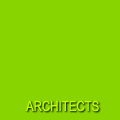

哲学:
我们的设计哲学可以浓缩为一句话(三"最"原则）： 最好的设计是在最苛刻的条件下获得设计与建造质量的最优。杰出的设计与建造质量使参与建筑工程的各方投资者长远受益，特别是房地产商和建筑的终端使用者。为了保障这一目标的实现，与客户紧密合作成为我们工作秩序中的重中之重。
优势:
德国法兰克福陈峥建筑师事务所（CHZH Architektur & Design Buero in Frankfurt am Main）成立于2010年。事务所创建者陈峥先生是德国黑森州注册建筑师（注册号：18996），在中国和德国拥有十年以上的从业经验。从1999年到2010年，先后受聘于中国、德国多家知名建筑师事务所，熟悉中国、德国多方面的设计与建造工艺流程。因此，我们在国际领域丰富的方案与施工图实战经验必然在设计与建造过程中带给我们的客户更深入广泛的设计咨询和技术保障，为客户的市场运作并企业核心价值的实现带来积极正面的影响。
实施:
我们在考察房屋建筑工程各种既定的框架条件，如场地现状、功能合理、建筑法规、投资成本等诸多因素的前提下，探求方案设计的各种可能性。在前期设计阶段，就已经考虑到节能、结构、消防等综合性技术因素，通过草图、模型、三维效果图等途径对建筑工程进行可视化方案设计。我们视施工图制作过程为进一步深化设计的过程，高度重视该过程中的“设计含量”，为保障设计和建造质量最重要的环节之一。我们通过与投资方、专业配套设计人员、国际领域里的各产品供应商、各厂家紧密协作，保障施工图制作过程中的节点和大样设计能有效地实现。
我们的业务涉及房屋建筑工程设计、室内装潢设计、房屋改建扩建等领域。除了承接德国传统的建筑工程设计与建造过程中九个阶段的业务外，我们还能提供效果图可视化设计、工程可行性研究与咨询、节能建筑咨询与培训、组织中国建筑师欧洲实地专业考察、国际领域的设计协作等业务。